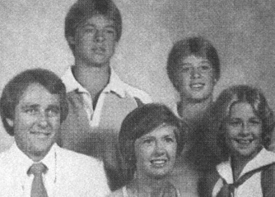
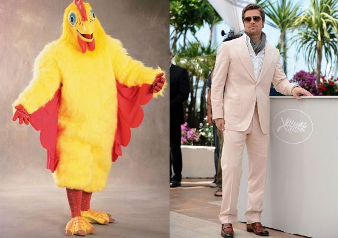
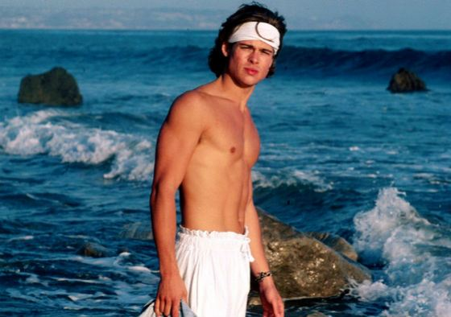

БИОГРАФИЯ БРЭДА ПИТТА
Брэд Питт (Уильям Брэдли Питт), известный, без преувеличения, всему миру, – это актер, продюсер, меценат, признанный секс-символ Голливуда, запомнившийся ролями в более чем 50 фильмах, среди которых такие признанные шедевры как «Бойцовский клуб», «Большой куш», «11 друзей Оушена», «Семь», «12 обезьян», «Загадочная история Бенджамина Баттона», «Бесславные ублюдки». Обладатель «Оскара» как лучший актер второго плана за роль каскадера Клиффа Бута в ленте Квентина Тарантино «Однажды в Голливуде».
ДЕТСТВО
Американский актер и продюсер Уильям Брэдли Питт появился на свет в городе Шауни, штат Оклахома, США. Будущая знаменитость воспитывалась в образцовой американской семье: порядочной и религиозной. Папа Брэда, Уильям Питт, трудился менеджером в компании, которая занималась грузоперевозками, а мама, Джейн Этта Хиллхаус, была простой школьной учительницей. Кроме Брэда в семье воспитывалось еще двое детей: брат Дуг и сестра Джулия.

Все они росли в городе Спрингфилд штата Миссури, куда почти сразу после рождения Брэдли переехала семья Питт. Будучи членами баптистской церкви, родители Брэда Питта воспитывали детей в строгости. Каждое воскресенье семья ходила в церковь, совместному ужину всегда предшествовала молитва, а все дети четы Питт пели в церковном хоре. В детстве Брэд был самым обычным ребенком: был флегматичен на уроках, активен и крайне любопытен за пределами школы, немного занимался спортом, музыкой, принимал участие в школьном самоуправлении и даже состоял в клубе дебатов. Окончив школу, юноша начал изучать журналистику и рекламное дело в университете Миссури-Колумбии. Ни дня не проработав по специальности, он уехал подальше от строгого родительского ока, навстречу своим заветным мечтам – в Голливуд.
ПЕРВЫЕ РОЛИ
Первым делом Брэдли сократил своем имя до короткого «Брэд» и убрал раздражавшее его первое имя. Но придумать запоминающийся псевдоним было только половиной дела. На пути к двери, открывавшей вход в киноиндустрию хотя бы с черного хода, ему пришлось перепробовать множество профессий. Он был и водителем, и мебельным грузчиком, и даже зазывалой в сети ресторанов «El Pollo Loco». Последняя работа обязывала его разгуливать по улице в костюме гигантского цыпленка и зазывать гостей поесть жареной курочки.

Впрочем, дипломированный журналист все это время лелеял свою мечту стать актером и тратил все заработанные деньги не только на съем жилья, но и на актерские курсы. Вскоре ему улыбнулась удача – в 1987 году он снялся в дико популярном в те годы сериале «Даллас». Начинающий актер ненадолго появился на экране как персонаж по имени Рэнди, бойфренд дочери одного из главных героев.

После этого он получил несколько других предложений о съемках в сериалах. Он засветился в эпизодах сериалов «Другой мир», «Проблемы роста», «Староста класса», «Байки из склепа», а также появился в небезызвестном «Джамп-стрит 21», где начинал свою карьеру молодой Джонни Депп. Среди первых работ Брэда Питта известна и реклама чипсов Принглс, транслировавшаяся по ТВ в 1989 году. Кто знал, что этот загорелый красавчик-блондин в будущем станет легендой кинематографа?